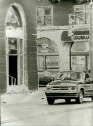

<!DOCTYPE HTML PUBLIC "-//W3C//DTD HTML 4.01 Transitional//EN"        "http://www.w3.org/TR/html4/loose.dtd">
<html lang="en">

<head>
<title>David Jauss:&nbsp; Haz Mat - Henderson State University</title>
<meta http-equiv="Content-Language" content="en-us">
<meta http-equiv="Content-Type" content="text/html; charset=windows-1252">
<meta name="GENERATOR" content="Microsoft FrontPage 5.0">
<meta name="ProgId" content="FrontPage.Editor.Document">
<meta name="copyright" content="Copyright © 2002 Henderson State University">
<meta name="rating" content="General">
</head>

<body background="images/ARlogoborderBROWN.jpg" link="#663300" vlink="#663300" alink="#663300" bgcolor="#FFFFFF"><div style="background:#241b2e;color:#fff;font-family:Arial,sans-serif;font-size:13px;padding:6px 14px;text-align:center;position:relative;z-index:9999;display:flex;align-items:center;justify-content:center;gap:10px;flex-wrap:wrap;"><span><a href="/books/arkansas-literary-forum" style="color:#fff;text-decoration:underline;">‚Üê Back to MarckBeggs.com</a> &nbsp;|&nbsp; <span style="opacity:.75;">Arkansas Literary Forum archive, preserved as originally published</span></span></div>

<div align="right">
  <table border="0" width="85%">
    <tr>
      <td width="71%" valign="top" align="left">
        <blockquote>
          <h1><b><font color="#663300"><span style="mso-bidi-font-size: 12.0pt"><font size="5" face="Arial">David
          Jauss</font></span></font><span style="font-size:18.0pt;mso-bidi-font-size:12.0pt"><o:p><font color="#6F0000" face="Arial">
          </font>
          </o:p>
          </span></b></h1>
        </blockquote>
        <p class="MsoNormal" style="mso-layout-grid-align:none;text-autospace:none"><font size="4"><b>Haz
        Mat</b></font><span style="font-size:12.0pt"><o:p>
        </o:p>
        </span></p>
        <p class="MsoNormal" style="mso-layout-grid-align:none;text-autospace:none"><b><font size="5">V</font><span style="font-size:12.0pt">ietnam</span></b><span style="font-size:12.0pt">,
        three marriages, three divorces, a son killed in a car accident, a
        daughter on crack, bankruptcy, eight months in the state pen for
        assault, plus a tour of dutyóhis wordsóin a psychiatric hospital:<span style="mso-spacerun: yes">&nbsp;
        </span>I havenít seen him in a decade, but here he is, pulling up a
        stool beside me in The Press Box, a bar near the school where he tried
        to save his life by writing all its sadness onto a page, so he could
        crumple it up and start over.<span style="mso-spacerun: yes">&nbsp; </span>Poem
        after poem of anguished prose about his horrible life, all as difficult
        to discuss in class as stanching a dozen wounds at once.<span style="mso-spacerun:
yes">&nbsp; </span>ìHey, Teach,î he says, then shakes my hand as if my bones
        are glass.<span style="mso-spacerun: yes">&nbsp; </span>Even in his
        forties he looked half dead, sparse hair grimy gray, cheeks and neck raw
        from Agent Orange, chest Auschwitz-thin.<span style="mso-spacerun: yes">&nbsp;
        </span>Now heís just risen from his grave.<span style="mso-spacerun:
yes">&nbsp; </span>Even his dirty T-shirt and jeans seem half decayed.<span style="mso-spacerun: yes">&nbsp;
        </span>I try to smile, ask him what heís doing these days.<span style="mso-spacerun: yes">&nbsp;
        </span>ìHauling Haz Mat, ì he answers.<span style="mso-spacerun: yes">&nbsp;
        </span>I must look puzzled because he adds,<span style="mso-spacerun: yes">&nbsp;
        </span>ìHaz Mat.<span style="mso-spacerun: yes">&nbsp; </span>You
        know.<span style="mso-spacerun: yes">&nbsp;&nbsp; </span>Hazardous
        Materials.<span style="mso-spacerun: yes">&nbsp; </span>Iím a trucker
        now.<span style="mso-spacerun: yes">&nbsp; </span>I drive those big
        chrome bombs on wheels.<span style="mso-spacerun: yes">&nbsp; </span>Toxic
        shit.<span style="mso-spacerun: yes">&nbsp; </span>Explosives.<span style="mso-spacerun: yes">&nbsp;
        </span>Iím the last guy you want to see driving down your street, but
        the payís great, and if I go, man, Iíll really go.<span style="mso-spacerun: yes">&nbsp;
        </span>Thereíll be parts of me raining down everywhere.î<span style="mso-spacerun:
yes">&nbsp; </span>He says this as if itís a joke, but heís not smiling.<span style="mso-spacerun: yes">&nbsp;
        </span>Then he asks me something, but I canít hear what because Iím
        remembering the first time he turned in a poem, how he stood there in my
        office, his face pale, lips drawn tight, and held it out toward me, one
        thin sheet of ordinary paper </span><span style="font-size:12.0pt;font-family:&quot;Times New Roman&quot;;mso-fareast-font-family:
&quot;Times New Roman&quot;;mso-ansi-language:EN-US;mso-fareast-language:EN-US;
mso-bidi-language:AR-SA">covered with black words, his hands trembling as though
        it might explode.</span></p>
        <p class="MsoNormal" style="mso-layout-grid-align:none;text-autospace:none" align="right"><span style="font-size:12.0pt">
        </o:p>
        </span></td>
      <td width="29%" valign="top" align="left">
        <p align="center">&nbsp;
        <p align="center">&nbsp;</p>
        <p align="center"><a href="images/artpics/Jason%20Harris%202.jpg">
        </a></p>
        <p align="center"><font size="1">(photo by Jason Harris)</font></td>
    </tr>
  </table>
</div>

<p align="center"><a title="Select to go to the Home Page" href="2001.html">HOME</a></p>

</body>

</html>